Kenya —
the Big Five and the trip of a lifetime
The middle leg of our three-week honeymoon — and the one that left us completely speechless. Five nights on safari in Kenya, three drives a day starting at 5.30am, the Big Five ticked off in full, a visit to the Maasai Mara community, being serenaded on the elephant deck during a romantic dinner, Rothschild's giraffes in Nairobi, Karen Blixen's house and bumpy roads that were absolutely part of the magic. Kenya is extraordinary. There are no other words.
What this trip gave us:
The story
The most extraordinary five nights of our lives.
After an incredible first night at our hotel in Kenya — a truly stunning property that set the tone for everything that followed — we were picked up the next morning by our safari truck and divided into groups. We ended up with two English people and their daughter, and from the very first drive we knew we had landed in brilliant company. The five of us spent the next five nights together and they made the whole experience even more special.
The rhythm of safari life quickly became our favourite thing in the world. Up at 5.30am for the morning drive — the best one, when the light is golden and the animals are most active. Back for breakfast. Out again at midday. Back for lunch. Out again in the evening. Three drives a day, every day, and every single one delivered something new and extraordinary.
We saw the Big Five — lion, elephant, leopard, buffalo and rhino — along with giraffes, hyenas, zebras, eagles and more wildlife than we could keep track of. Every corner of the savanna seemed to hold something breathtaking. The bumpy roads were all part of the experience — and the whole package meant we barely spent a penny during the day beyond tips for the driver and guide, who were both wonderful.
The visit to the Maasai Mara community was one of the most genuinely moving experiences of the entire honeymoon. The warmth of the welcome, the insight into their way of life and the privilege of spending time with them was something we will carry with us for the rest of our lives. And being serenaded by the tribe on the elephant deck during a romantic dinner — as the African sun went down around us — was a moment of pure, perfect magic.
In Nairobi, we visited the Rothschild's Giraffe Centre — getting up close with these magnificent and endangered animals is something completely special — and Karen Blixen's house, made famous by Out of Africa, which was as beautiful and evocative as we had hoped.
The highlights — what stood out most
Lion, elephant, leopard, buffalo and rhino — we saw them all. Every sighting was extraordinary but seeing a lion up close on that first morning was something we will never forget.
Worth every 5.30am alarm. The golden morning light on the savanna, the stillness and the sheer abundance of wildlife at that hour made every early start completely worthwhile.
One of the most culturally rich and moving experiences of the whole honeymoon — spending time with the Maasai community and witnessing their extraordinary way of life was a genuine privilege.
Being serenaded by the Maasai tribe on the elephant deck during a romantic dinner as the African sun set around us — an utterly magical and completely unforgettable honeymoon moment.
The Giraffe Centre in Nairobi is an extraordinary experience — getting up close with these beautiful endangered animals and the incredible conservation work being done for them.
The Out of Africa setting in real life — beautifully preserved, fascinatingly evocative and with the Ngong Hills in the background exactly as you would hope. A wonderful Nairobi stop.
The savanna, the wildlife and the people
28 photos from five extraordinary nights in Kenya — the Big Five, the Maasai community, the giraffes, the eagle and everything in between.
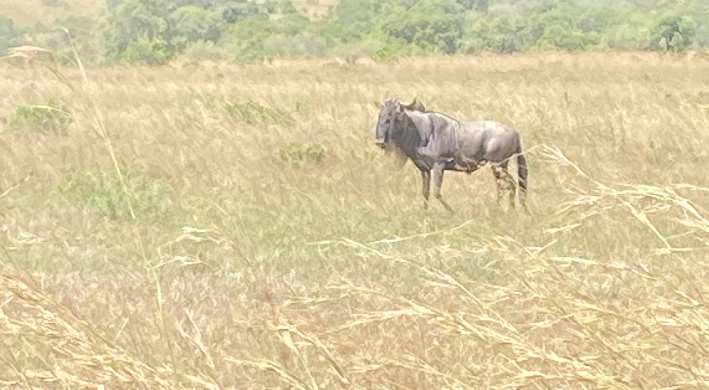
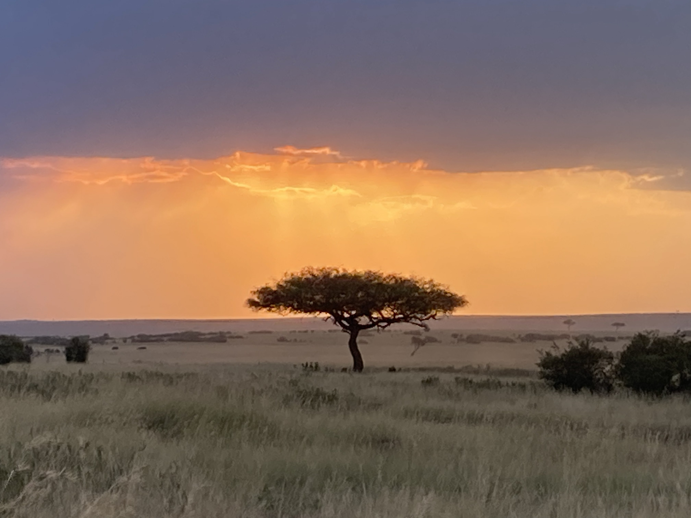
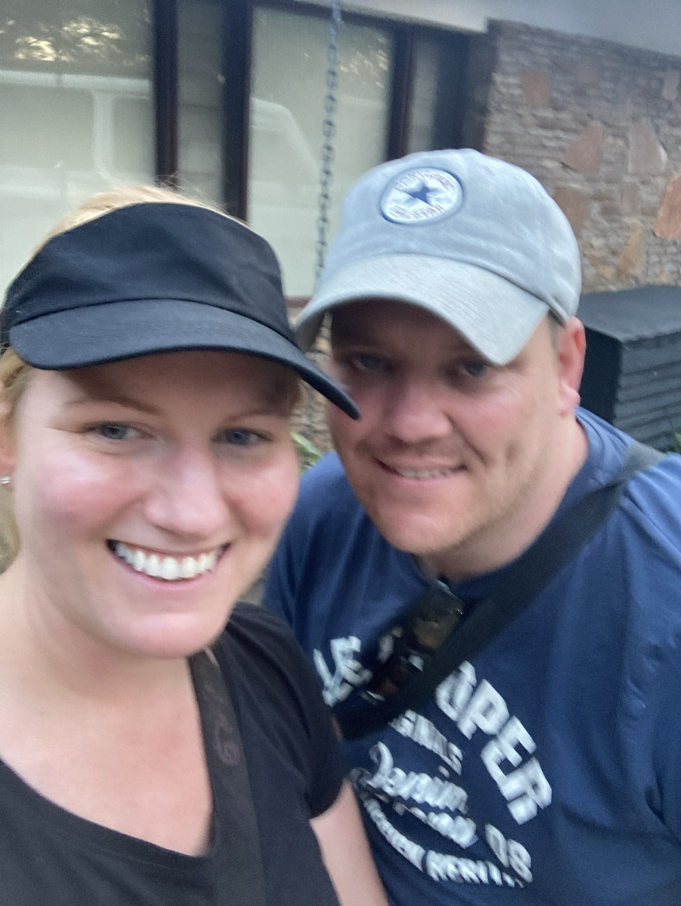


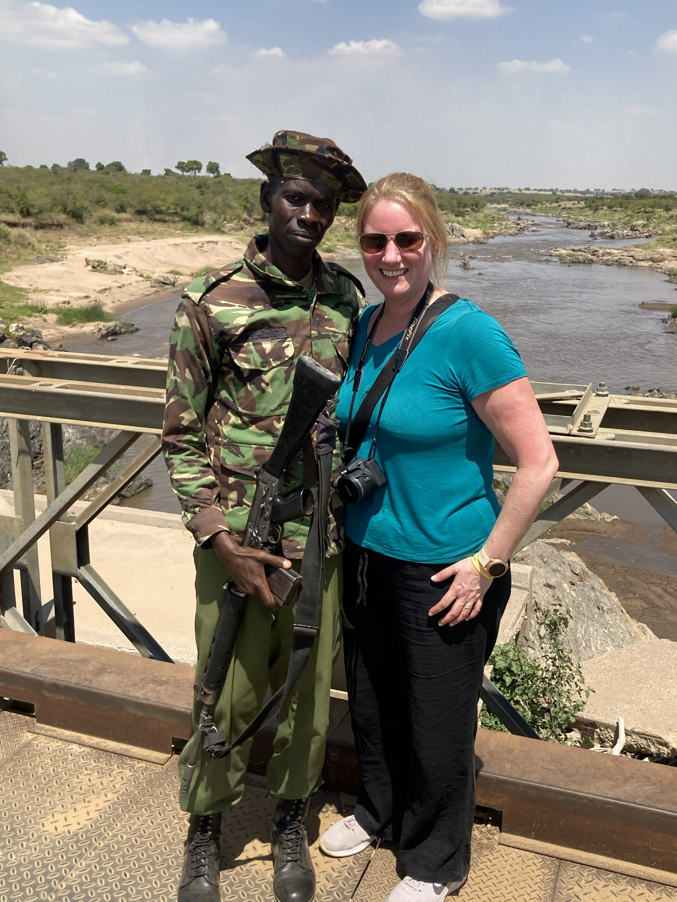


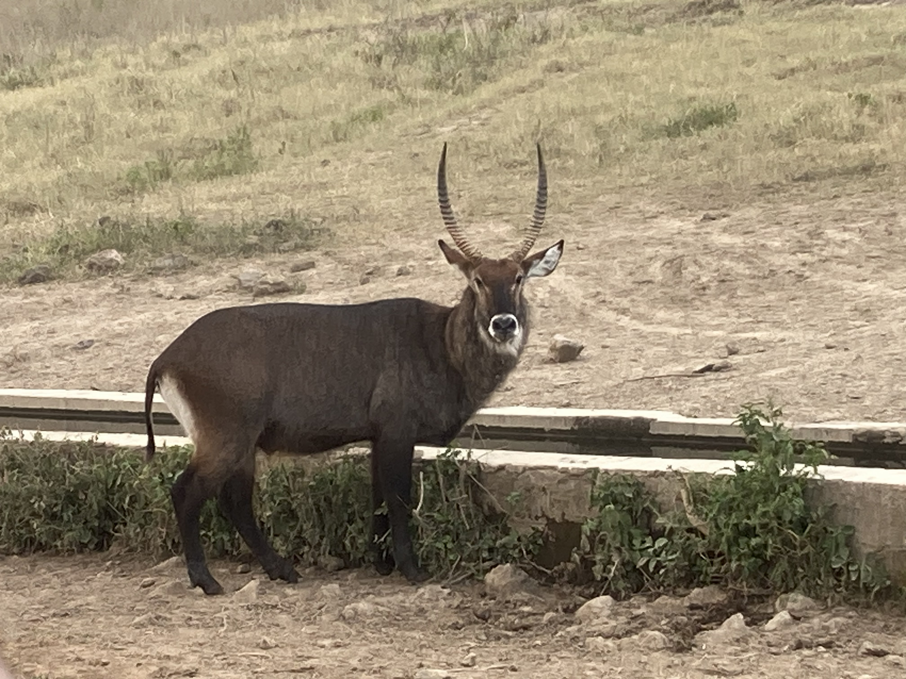
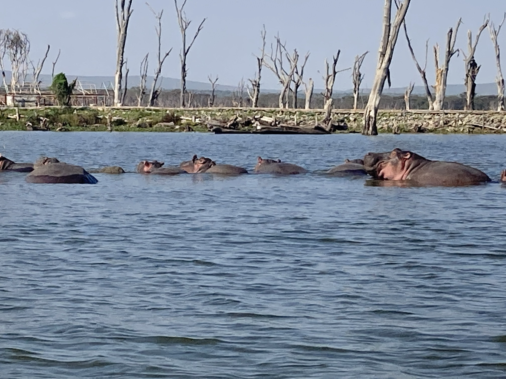


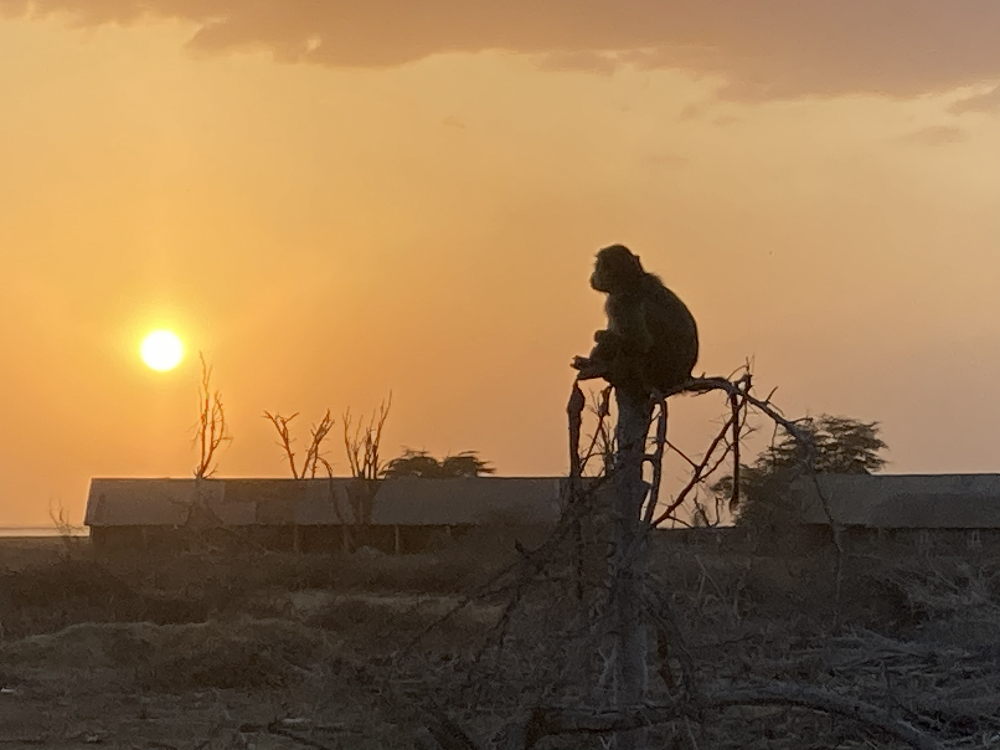
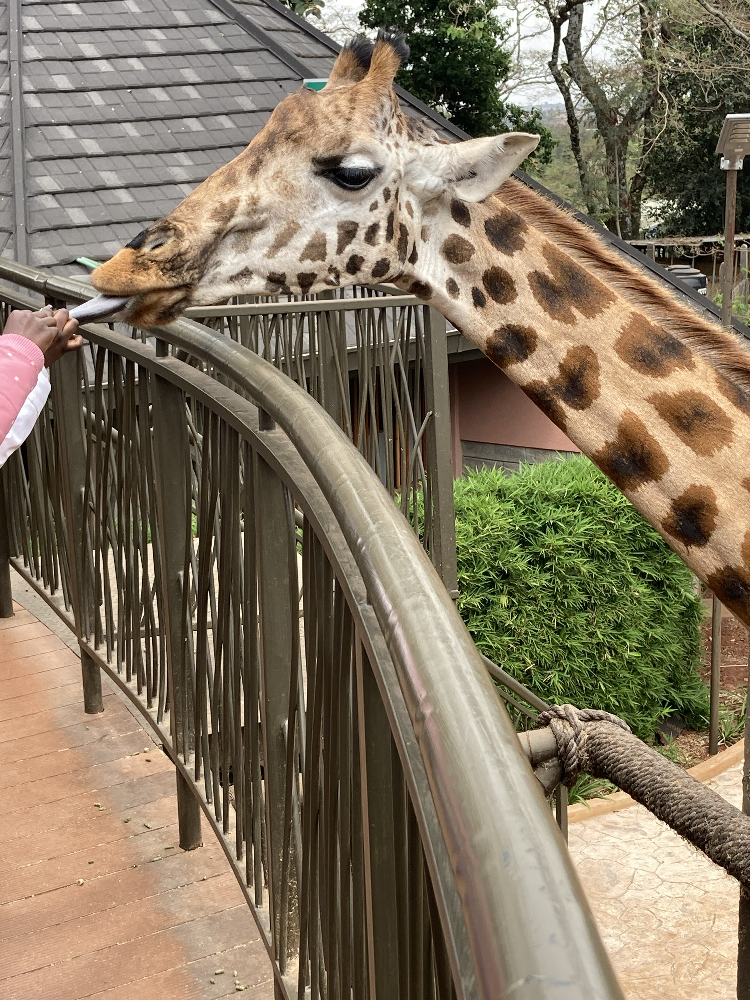
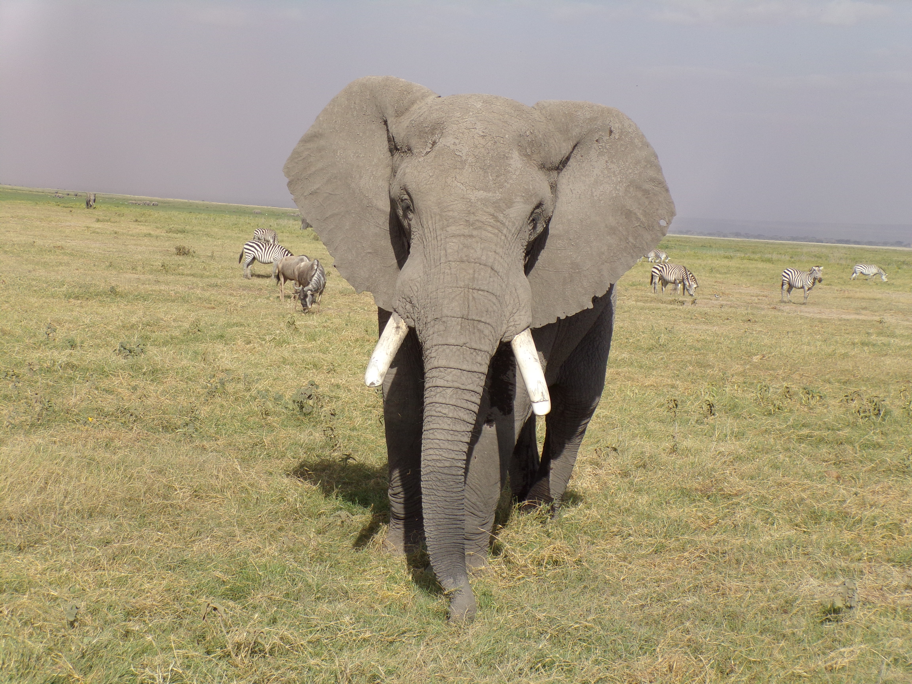
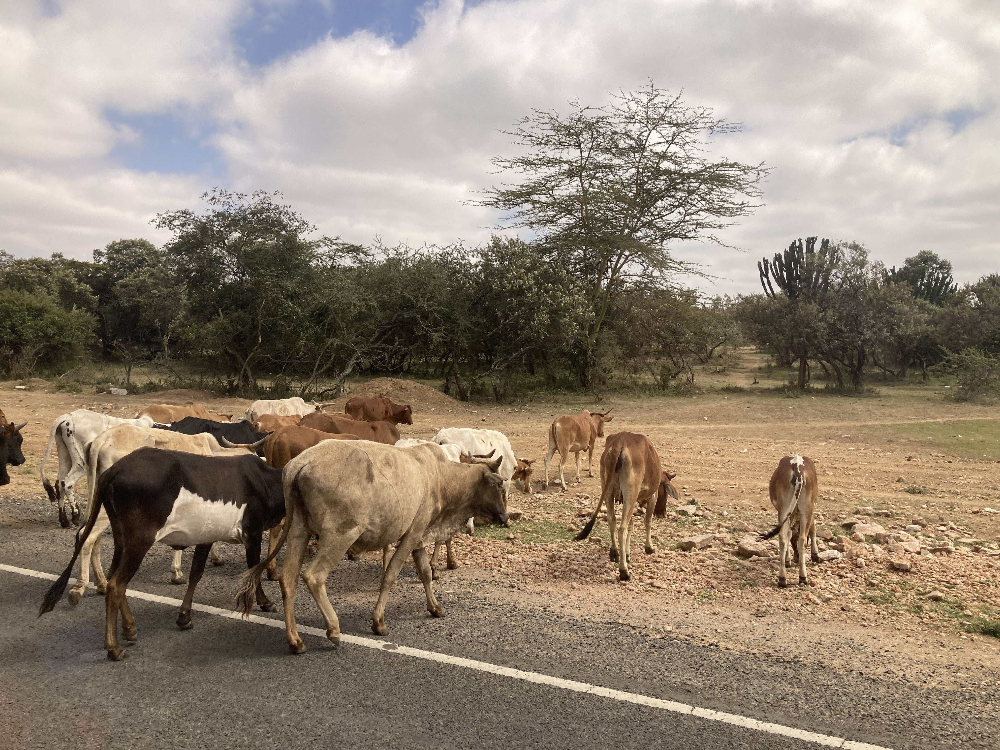

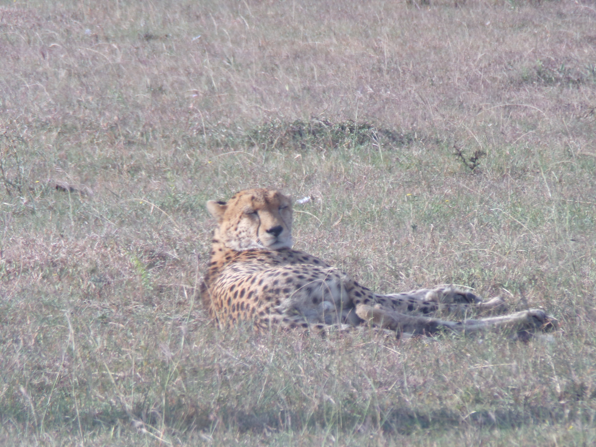

Watch our shorts
Naivasha, the Maasai serenade, eagle spotting & the giraffes
Four reels from our Kenya honeymoon — the beautiful Lake Naivasha, being serenaded by the Maasai tribe on the elephant deck, spotting an eagle on safari and spending time with the Rothschild's giraffes in Nairobi.
🌿 Naivasha, Kenya
🎵 Serenaded by the Maasai
🦅 Spotting an eagle on safari
🦒 Rothschild's giraffes, Nairobi
Book a Kenya safari through TourRadar
A Kenya safari is one of the greatest travel experiences on earth — and TourRadar has brilliant options to help you plan every detail.
Whether you want a classic Big Five safari, a Maasai Mara cultural experience, a honeymoon package or a wider East Africa adventure combining Kenya with Tanzania or Zanzibar — having the logistics handled means you can focus entirely on the experience. And trust us — you will want to be fully present for every single moment.
Disclosure: This is an affiliate link. If you book through it we may earn a small commission at no extra cost to you.
Book Kenya experiences with GetYourGuide
From Nairobi day trips and Giraffe Centre visits to Maasai Mara safaris and multi-day adventures — browse Kenya activities here:
Disclosure: If you book through these links we may earn a small commission at no extra cost to you.
Common questions
Kenya Safari FAQ
What to pack for a Kenya safari
Kenya safari packing essentials — what we'd bring
Safari packing is all about practicality — neutral colours, layers for early mornings and hot afternoons, and protection from the sun and insects. These are the things we would not leave home without.
The African sun is intense — especially on open safari drives. High SPF is absolutely essential and you will go through more than you expect on long days out in the vehicle.
View on Amazon →Essential in Kenya — mosquitoes are present and malaria prophylaxis is strongly recommended. Consult your doctor before travel and bring strong repellent for evenings outdoors.
View on Amazon →Early morning safari drives at 5.30am can be surprisingly cool — a light layer is essential before the sun comes up fully. You will peel it off by mid-morning.
View on Amazon →Essential for open safari vehicles where you are exposed to the sun for hours. A wide brimmed hat keeps you comfortable and protected on long drives across the savanna.
View on Amazon →Staying hydrated is crucial on long safari drives in the heat. A good reusable water bottle is one of the most important things you can pack for any African safari.
View on Amazon →With three safari drives a day your camera and phone will be working overtime. A power bank keeps you ready for every wildlife encounter — and there will be many.
View on Amazon →For carrying water, sunscreen, a layer and your camera gear on safari drives. Keep it light and neutral coloured — bright colours are not ideal on the savanna.
View on Amazon →Connectivity can be limited on safari but useful in Nairobi and larger towns. An eSIM keeps you connected without roaming charges when signal is available.
View on Amazon →Kenya uses Type G plugs — the same as the UK and Ireland actually, but always worth double checking your specific resort or lodge before you travel.
View on Amazon →Always worth having on any safari — for blisters, bites, headaches and anything else that comes up on long days out in the bush.
View on Amazon →Disclosure: These are Amazon affiliate links. If you buy through them we may earn a small commission at no extra cost to you. These are all things we'd genuinely pack for a Kenya safari.
Planning your own Kenya safari?
Kenya is one of the greatest wildlife destinations on earth — and a safari here is an experience that will stay with you for the rest of your life. Book it. Go early. Stay late. And never underestimate the 5.30am alarm.
Affiliate disclosure: if you book through our links we may earn a small commission at no cost to you. We only recommend trips and experiences we'd be happy to stand over.